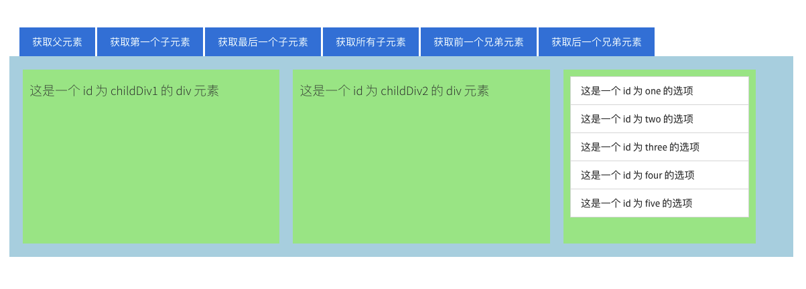
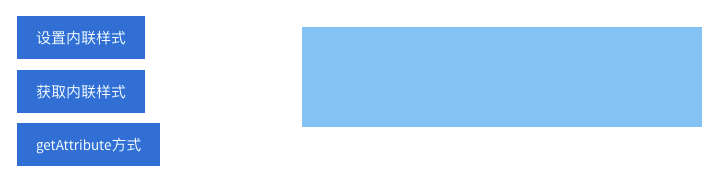
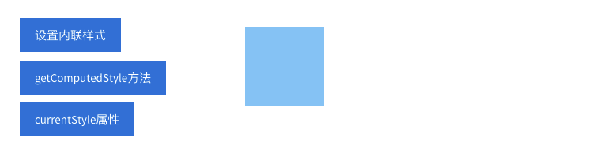

还记得下面这张图吗？
DOM 访问或操作 HTML 页面内容主要是依靠 DOM 节点树这个模型。但在 DOM 中的三个主要对象，除了 Document 和 Node 之外，还有一个就是 Element 对象。
Element 对象描述了所有相同种类的元素所普遍具有的方法和属性，也是访问和操作 HTML 页面内容的主要途径之一。
Element 对象和 Node 对象类似，同样提供了一个 DOM 元素树这个模型。如下图所示:
值得注意的是: 节点与元素的区别是什么？
通过节点访问或操作 HTML 页面内容:
- 元素节点: 表示 HTML 页面中的标签。
- 属性节点: 表示 HTML 页面中标签的属性。
- 文本节点: 表示 HTML 页面中标签的文本内容。
通过元素访问或操作 HTML 页面内容:
- 元素: 表示 HTML 页面中的标签。
也就是说，使用节点方式时，标签、属性和文本是平行关系；而使用元素方式时，只有标签，属性和文本成为了标签的一部分。
由于 Element 对象是继承于 Document 对象的，所以 Document 对象的属性和方法，Element 对象都可以直接使用。
我们已经掌握如何通过 Document 对象获取 HTML 页面标签:
getElementById() 方法: 通过标签的 id 属性值获取指定标签。getElementsByName() 方法: 通过标签的 name 属性值获取指定标签。getElementsByTagName() 方法: 通过标签名获取指定标签。getElementsByClassName() 方法: 通过标签的 class 属性值获取指定标签。querySelector() 方法: 通过 CSS 选择器方式获取匹配的第一个标签。querySelector() 方法: 通过 CSS 选择器方式获取匹配的所有标签。以上获取 HTML 页面标签的方法，在 Element 对象中同样可以使用。
值得注意的是: 获取的 HTML 页面中的标签，既是 Node 对象，也是 Element 对象。
通过 HTML 页面的指定标签查找其父元素，我们可以通过如下属性实现:
element.parentElement我们可以通过如下示例来学习 parentElement 的使用:
在上述 HTML 页面中，我们获取 id 为 childDiv1 的 <div> 标签的父节点，并且改变背景颜色。
var btn1 = document.getElementById('btn1');
btn1.onclick = function(){
var childDiv1 = document.getElementById('childDiv1');
var parentDiv = childDiv1.parentElement;
parentDiv.style.backgroundColor = 'lightgreen';
}运行代码后的 HTML 页面效果如下:
通过 HTML 页面的指定标签查找其子元素，我们可以通过如下属性实现:
firstElementChild: 获取指定标签的第一个子元素。lastElementChild: 获取指定标签的最后一个子元素。children: 获取指定标签的所有子元素。我们可以通过如下示例来学习获取子元素 3 个属性的使用:
在上述 HTML 页面中，我们获取 id 为 parentDiv 的 <div> 标签的第一个子元素，并且改变背景颜色。
var btn2 = document.getElementById('btn2');
btn2.onclick = function(){
var parentDiv = document.getElementById('parentDiv');
var firstChild = parentDiv.firstElementChild;
firstChild.style.backgroundColor = 'lightgreen';
}运行代码后的 HTML 页面效果如下:
我们获取 id 为 parentDiv 的 <div> 标签的最后一个子元素，并且改变背景颜色。
var btn3 = document.getElementById('btn3');
btn3.onclick = function(){
var parentDiv = document.getElementById('parentDiv');
var lastChild = parentDiv.lastElementChild;
lastChild.style.backgroundColor = 'lightgreen';
}运行代码后的 HTML 页面效果如下:
我们获取 id 为 parentDiv 的 <div> 标签的所有子元素，并且改变背景颜色。
var btn4 = document.getElementById('btn4');
btn4.onclick = function(){
var parentDiv = document.getElementById('parentDiv');
var children = parentDiv.children;
for (var i=0;i<children.length;i++) {
children[i].style.backgroundColor = 'lightgreen';
}
}运行代码后的 HTML 页面效果如下:

通过 HTML 页面的指定标签查找兄弟元素，我们可以通过如下属性实现:
previousElementSibling: 获取指定节点的前一个兄弟节点。nextElementSibling: 获取指定节点的后一个兄弟节点。我们可以通过如下示例来学习获取兄弟元素 2 个属性的使用:
在上述 HTML 页面中，我们获取 id 为 two 的 <li> 标签的前一个兄弟元素，并且改变背景颜色。
var btn5 = document.getElementById('btn5');
btn5.onclick = function(){
var two = document.getElementById('two');
var one = two.previousElementSibling;
one.className = 'list-group-item active';
}运行代码后的 HTML 页面效果如下:
我们获取 id 为 two 的 <li> 标签的后一个兄弟元素，并且改变背景颜色。
var btn6 = document.getElementById('btn6');
btn6.onclick = function(){
var two = document.getElementById('two');
var three = two.nextElementSibling;
three.className = 'list-group-item active';
}运行代码后的 HTML 页面效果如下:
Element 对象提供的属性操作的方法，是实际开发中应用最多的。（因为 Element 对象操作属性要比 Node 对象简便。）
获取 HTML 页面标签的指定属性值，我们可以通过以下方法实现:
element.getAttribute(属性名)我们可以通过如下示例来学习 getAttribute() 的使用:
在上述 HTML 页面中，我们获取 id 为 one 的 <li> 标签的 title 属性值并打印。
var btn1 = document.getElementById('btn1');
btn1.onclick = function(){
var one = document.getElementById('one');
var titleValue = one.getAttribute('title');
console.log(titleValue);
}运行代码后得到的结果如下:
this is li element设置 HTML 页面标签的指定属性，我们可以通过以下方法实现:
element.setAttribute(属性名, 属性值)我们可以通过如下示例来学习 setAttribute() 的使用:
在上述 HTML 页面中，我们设置 id 为 one 的 <li> 标签的 title 属性值并打印。
var btn2 = document.getElementById('btn2');
btn2.onclick = function(){
var one = document.getElementById('one');
one.setAttribute('title', 'this is a new li element');
var titleValue = one.getAttribute('title');
console.log(titleValue);
}运行代码后得到的结果如下:
this is a new li element删除 HTML 页面标签的指定属性，我们可以通过以下方法实现:
element.removeAttribute(属性名)我们可以通过如下示例来学习 removeAttribute() 的使用:
在上述 HTML 页面中，我们删除 id 为 one 的 <li> 标签的 title 属性值并打印。
var btn3 = document.getElementById('btn3');
btn3.onclick = function(){
var one = document.getElementById('one');
one.removeAttribute('title');
var titleValue = one.getAttribute('title');
console.log(titleValue);
}运行代码后得到的结果如下:
null判断 HTML 页面标签的是否含有属性，我们可以通过以下方法实现:
element.hasAttribute(属性名)我们可以通过如下示例来学习 hasAttribute() 的使用:
在上述 HTML 页面中，我们判断 id 为 one 的 <li> 标签是否含有 title 属性值并打印。
var btn4 = document.getElementById('btn4');
btn4.onclick = function(){
var one = document.getElementById('one');
var result = one.hasAttribute('title');
console.log(result);
}通过学习 DOM 查询我们知道，获取或更新文本就是对文本节点的操作。文本节点的 nodeValue 属性可以得到文本内容，也可以设置文本内容。
textNode.nodeValue我们可以通过如下示例来学习如何通过 nodeValue 属性获取或更新文本:
在上述 HTML 页面中，我们获取 id 为 one 的 <li> 标签的文本内容并打印。
var btn1 = document.getElementById('btn1');
btn1.onclick = function(){
var one = document.getElementById('one');
var text = one.firstChild.nodeValue;
console.log(text);
}innerText 或 textContent 属性都可以用于获取或更新文本。我们先来掌握如何使用这两个属性，再来讨论它们之间的区别。
我们可以通过如下示例来学习如何通过 innerText 属性获取或更新文本:
在上述 HTML 页面中，我们获取 id 为 one 的 <li> 标签的文本内容并打印。
var btn2 = document.getElementById('btn2');
btn2.onclick = function(){
var one = document.getElementById('one');
var text = one.innerText;
console.log(text);
}学习如何通过 textContent 属性获取或更新文本:
在上述 HTML 页面中，我们获取 id 为 one 的 <li> 标签的文本内容并打印。
var btn2 = document.getElementById('btn2');
btn2.onclick = function(){
var one = document.getElementById('one');
var text = one.textContent;
console.log(text);
}那 innerText 或 textContent 属性之间有什么区别呢？我们还是先通过一个示例入手:
上述 HTML 页面的主要 HTML 源码如下:
<!DOCTYPE html>
<html>
<head>
<meta charset="UTF-8">
<title>文本操作</title>
<link rel="stylesheet" href="css/style.css" />
<style type="text/css">
i {
display: none;
}
</style>
</head>
<body>
<ul class="list-group">
<li id="one" class="list-group-item">这是一个 id 为 one 的选项</li>
<li id="two" name="list" class="list-group-item">这是一个 <i>id</i> 为 two 的选项</li>
</ul>
</body>
</html>说明: 在上述 HTML 页面中，
<i>标签被 CSS 样式隐藏。
我们获取 id 为 two 的 <li> 标签的文本内容并打印。
var btn4 = document.getElementById('btn4');
btn4.onclick = function(){
var two = document.getElementById('two');
var text1 = two.innerText;
console.log('innerText 属性获取的文本内容: '+text1);
var text2 = two.textContent;
console.log('textContent 属性获取的文本内容: '+text2);
}运行代码后得到的结果如下:
innerText 属性获取的文本内容: 这是一个 为 two 的选项
textContent 属性获取的文本内容: 这是一个 id 为 two 的选项通过得到的结果，我们可以知道:
| 属性名 | 获取文本的结果 | 浏览器支持情况 |
|---|---|---|
| innerText | 不能获取被 CSS 样式隐藏的文本内容 | Firefox 不支持 |
| textContent | 可以获取全部文本内容 | IE 8及之前版本不支持 |
值得注意的是: 并不建议使用 innerText 属性，因为它并不属性任何标准，而且性能不好。
我们可以通过 innerHTML 属性来获取或更新 HTML 页面的指定标签所包含的 HTML 代码内容。
通过以下 JavaScript 代码逻辑，实现添加徽章组件效果。
var btn = document.getElementById('btn');
btn.onclick = function(){
var one = document.getElementById('one');
var content = one.innerHTML;
content = '<span class="badge">14</span>' + content;
one.innerHTML = content;
}运行代码后的 HTML 页面效果如下:
值得注意的是:
innerHTML属性、document.write()方法和 DOM 操作的优缺点格式什么？
innerHTML属性:
- 优点:
- 和 DOM 操作方法相比，可以使用更少的代码添加大量的新标签。
- 向页面中添加大量新元素时，速度比 DOM 操作更快。
- 当需要移除元素中的所有内容时，它更简单（直接设置一个空字符串即可）。
- 缺点:
- 不应该用它来添加来自于用户输入的内容，因为存在安全隐患。
- 在添加一个很大的 DOM 片段时，这个方法很难独立区分出每一个元素。
- 事件处理程序可能不像预期那样生效。
document.write()方法: 很简单地向 HTML 页面插入内容，但不推荐使用。
- 优点: 可以快速、简单地让初学者理解如何向页面添加内容。
- 缺点:
- 只在页面初始化加载时有效。
- 在严格验证的 XHTML 中可能会遇到问题。
DOM 操作:
- 优点:
- 如果 DOM 片段中拥有大量的兄弟节点，处理其中一个元素节点时使用这种方法更合适。
- 不会影响事件处理程序。
- 可以轻易地使用脚本来逐步添加元素。
- 缺点:
- 如果需要对页面内容进行大量修改，它的速度比 innerHTML 属性更慢。
- 与使用 innerHTML 属性相比，它需要更多的代码来实现同样的功能。
HTML 页面标签的内联样式主要是通过 style 属性进行设置，所以 DOM 操作标签的内联样式也是通过 style 属性来完成的。
想改变 HTML 页面标签的内联样式，我们可以通过以下方式实现:
element.style.attrName = attrValue我们可以通过如下示例来学习如何改变标签的内联样式:
首先，我们来改变 div 标签的宽度。
var btn1 = document.getElementById('btn1');
btn1.onclick = function(){
var div1 = document.getElementById('div1');
div1.style.width = '400px';
}运行代码后的 HTML 页面效果如下:

值得注意的是: 如果设置 CSS 样式时，使用了
!important预定义的 CSS 样式优先级最高，会导致改变内联样式失效。
其次，我们来改变 div 标签的背景颜色。
var btn1 = document.getElementById('btn1');
btn1.onclick = function(){
var div1 = document.getElementById('div1');
div1.style.backgroundColor = 'lightseagreen';
}运行代码后的 HTML 页面效果如下:
值得注意的是:
在修改例如
background-color这样的 CSS 属性时，不能使用element.style.background-color这种方式，浏览器会解析成 JavaScript 的表达式。最终会报错。所有例如
background-color这样的 CSS 属性在使用时，必须要改为 驼峰式 命名方式（例如backgroundColor）。
获取 HTML 页面标签的内联样式，我们同样可以通过以下方式实现:
var attrValue = element.style.attrName我们可以通过如下示例来学习如何改变标签的内联样式:
首先，我们来获取 div 标签的宽度。
var btn2 = document.getElementById('btn2');
btn2.onclick = function(){
var div1 = document.getElementById('div1');
var show = document.getElementById('show');
show.innerHTML = 'div 标签的宽度为: ' + div1.style.width;
}运行代码后所得到的结果如下:
div 标签的宽度为: 400px值得注意的是: 获取的宽度的值是 String 类型，如果需要计算的话，要先转换成 Number 类型再进行计算。
其次，我们获取 div 标签的背景颜色。
var btn2 = document.getElementById('btn2');
btn2.onclick = function(){
var div1 = document.getElementById('div1');
var show = document.getElementById('show');
show.innerHTML = 'div 标签的背景色为: ' + div1.style.backgroundColor;
}运行代码后所得到的结果如下:
div 标签的背景色为: lightseagreen操作内联样式，我们也可以通过 DOM 的属性操作方式实现。
- 设置内联样式:
setAttribute('style', CSS 样式内容)- 获取内联样式:
getAttribute('style')
通过 getAttribute() 方法获取指定标签的内联样式，具体实现方式如下:
var btn3 = document.getElementById('btn3');
btn3.onclick = function(){
var div1 = document.getElementById('div1');
var show = document.getElementById('show');
show.innerHTML = 'div 标签的内联样式为: ' + div1.getAttribute('style');
}运行代码后所得到的结果如下:
div 标签的内联样式为: width: 400px; background-color: lightseagreen;值得注意的是: 通过
getAttribute()方法获取的内联样式，并不能准确到具体的样式属性值。而是返回所有 CSS 样式内容。
通过 element.style 属性，我们只能获取内联样式内容，并不能获取 CSS 样式内容。
我们可以通过如下方法获取 HTML 页面标签的当前样式内容（内联样式及外联样式）:
window.getComputedStyle(element, null)该方法会返回一个包含当前所有的 CSS 样式的对象，我们可以通过
object.attrName的方式得到指定的样式值。
我们可以通过如下示例来学习如何获取标签的当前样式:

获取 div 标签的背景颜色。
var btn2 = document.getElementById('btn2');
btn2.onclick = function(){
var div1 = document.getElementById('div1');
var show = document.getElementById('show');
var cssObj = getComputedStyle(div1, null);
show.innerHTML = 'div 标签的背景色为: ' + cssObj.backgroundColor;
}运行代码后所得到的结果如下:
div 标签的背景色为: rgb(32, 178, 170)IE 8 及之前版本的浏览器并不支持 getComputedStyle() 方法。如果，在 IE 8 及之前版本的浏览器，我们需要使用以下属性实现:
element.currentStyle我们可以通过如下示例来学习如何获取标签的当前样式:
获取 div 标签的背景颜色。
var btn3 = document.getElementById('btn3');
btn3.onclick = function(){
var div1 = document.getElementById('div1');
var show = document.getElementById('show');
show.innerHTML = 'div 标签的背景色为: ' + div1.currentStyle.backgroundColor;
}运行代码后所得到的结果如下:
div 标签的背景色为: rgb(32, 178, 170)用户既可能使用 IE 8 及之前的版本，也可能使用 IE 9 及之后的版本，还可能使用其他浏览器。
所以，我们在实际开发中，需要提供一个全浏览器兼容的解决方案。
function getStyle(elem, attrName){
// 判断 window.getComputedStyle() 方法是否存在
if (window.getComputedStyle){
return getComputedStyle(elem, null);
}else{
return elem.currentStyle[attrName];
}
}获取 HTML 页面标签的可见宽度和高度的属性如下:
我们可以通过如下示例来学习如何获取标签的可见宽度:
var btn1 = document.getElementById('btn1');
btn1.onclick = function(){
var div1 = document.getElementById('div1');
var show = document.getElementById('show');
show.innerHTML = 'div 标签的可见宽度为: ' + div1.clientWidth;
}运行代码后所得到的结果如下:
div 标签的可见宽度为: 120对应 div 标签的 CSS 样式内容如下:
#div1 {
width: 100px;
height: 100px;
padding: 10px;
background-color: lightskyblue;
}需要注意的是:
可见宽度的值实际上是标签的宽度，再加上内边距的宽度的值。我们可以总结出如下公式:
clientWidth = width + padding-left + padding-right
获取 HTML 页面标签的实际宽度和高度的属性如下:
我们可以通过如下示例来学习如何获取标签的可见宽度:
var btn2 = document.getElementById('btn2');
btn2.onclick = function(){
var div2 = document.getElementById('div2');
var show2 = document.getElementById('show2');
show2.innerHTML = 'div 标签的实际宽度为: ' + div2.offsetWidth;
}运行代码后所得到的结果如下:
div 标签的实际宽度为: 140对应 div 标签的 CSS 样式内容如下:
#div1 {
width: 100px;
height: 100px;
padding: 10px;
border: solid black 10px;
background-color: lightskyblue;
}需要注意的是:
实际宽度的值实际上是标签的宽度，加上内边距的宽度，再加上边框的值。我们可以总结出如下公式:
clientWidth = width + padding-left + padding-right + border-width
获取 HTML 页面标签的定位父元素:
element.offsetParent我们可以通过如下示例来学习如何获取定位父元素:
var btn3 = document.getElementById('btn3');
btn3.onclick = function(){
var div3 = document.getElementById('div3');
var show3 = document.getElementById('show3');
show3.innerHTML = 'div 标签的定位父元素为: ' + div3.offsetParent;
}上述代码运行的结果是: 当前 div 标签的开启 position 属性的定位父元素。
需要说明的是: 除了 offsetParent 属性可以获取指定标签的定位父元素，可以有 offsetLeft 和 offsetTop 属性来获取相对于其定位父元素的水平偏移量和垂直偏移量。
有关滚动的相关属性如下:
具体用法请参考相应案例
本笔记的内容免费开源，任何人都可以免费学习、分享，甚至可以进行修改。但需要注明作者及来源，并且不能用于商业。
本笔记采用知识共享署名-非商业性使用-禁止演绎 4.0 国际许可协议进行许可。